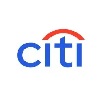
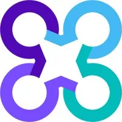

Arun Brahma
Senior Machine Learning Engineer, Walmart Global Tech
Research Interests Multi-agent systems · Reinforcement learning (RLVR) · Agentic RAG
LLMs are reshaping every workflow, from code generation to RAG-powered enterprise search. I firmly believe Gen AI will democratize intelligence, amplify human creativity, and accelerate discovery to drive smarter decisions, equitable opportunity, and compounding prosperity worldwide.
I have a proven track record of building AI-enabled products and driving business growth in the finance, healthcare, and retail domains.
I am a Senior Machine Learning Engineer at Walmart, where I work on Gen AI initiatives, notably the Agentic AI Shopping Assistant.
Curious about my reading habits? Slide over to Bookshelf.
Work Experience
- Developed a Shopping Assistant using multi-agent architecture and MCP protocol, orchestrating Text-to-SQL, Graph and RAG sub-agents for search, analytics, and automation.
- Increased conversion rate by 37% across pilot categories through reliable intent routing, context retrieval, and automated workflows.

Citi Bank- Built an enterprise-grade Text to SQL conversational analytics platform using fine-tuned Llama model that would generate insights on complex financial data.
- Automated SQL query generation to boost analyst productivity by 65% and ensure compliance with financial data governance.

Carelon Global Solutions- Designed a scalable hybrid RAG application on health insurance policy documents using Qdrant for semantic retrieval and BM25 for sparse retrieval.
- Achieved 23% improvement in customer satisfaction feedback compared to traditional chat support.
- Implemented a scalable two-tower embedding model architecture to generate candidate product recommendations using user features and product features.
- Improved click-through rate by 47% using new product recommendation pipeline thereby positively impacting the organization’s top line.
Personal Projects
- Developed an open-source Python library translating scanned standard PDFs into markdown via Vision LLMs, capturing text, tables, images, LaTeX.
- Benchmarked Vision Parse against Microsoft’s MarkItDown across diverse PDFs, delivering 0.88 markdown accuracy, outperforming MarkItDown’s 0.52 by 69%.
Beyond ML
Wrote a book for young Indian professionals on guarding the invisible salary of attention, energy, judgement, time, and calm that quietly decides what the visible paycheck becomes in the AI age.
Built a no-login browser chess app to play a tuned engine across ten levels or practice with live Stockfish analysis, with a Gemini Vision feature that turns a screenshot of any board into an editable position.
Built a free, open-source macOS dictation app that turns speech into text entirely on-device on the Apple Neural Engine, with no cloud, accounts, or telemetry.
Take part as a recurring Google UX Research participant since 2024, sharing feedback on early AI/ML and Google Cloud products including BigQuery, Notebooks, and the Gemini CLI.